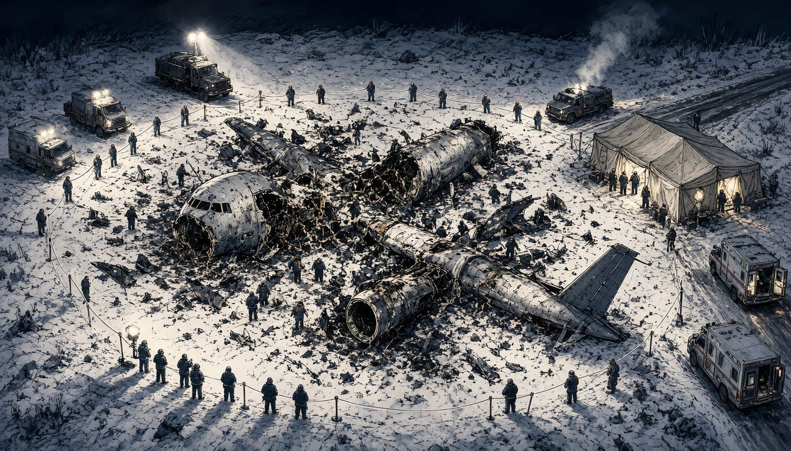

19 dead as burning Russian An-12 comes down near Kemerovo
The Defence Ministry says a technical malfunction is the preliminary cause, but the Investigative Committee has opened a criminal case for violation of flight rules. Verified footage appeared to show a lighted object falling and an explosion.

A Russian military An-12 transport aircraft crashed near Yagunovo in the Kemerovo region on 17 November, killing all 19 aboard, crew and soldiers. The Defence Ministry said the preliminary cause was a technical malfunction, with no external impact. A commission of the Aerospace Forces is working at the site to establish all circumstances of the catastrophe.
The Investigative Committee of Russia has opened a criminal case under Article 351 of the Criminal Code for violation of flight rules or preparation for them. The ministry's finding is preliminary; the criminal case does not name a cause.
The aircraft was flying from Novosibirsk to Kansk. About a quarter of the way into the route, the crew requested an emergency landing in Kemerovo, according to Mosmonitor. The Russian channel Baza reported that the aircraft caught fire in the air, and a preliminary inspection found one of its four engine nacelles almost completely burned out and the fuel system damaged. According to Mosmonitor, specialists point to a kerosene leak from a faulty fuel pump or pipe.
CCTV footage posted on social media appeared to show a lighted object falling through the sky and an explosion lighting up the sky. The BBC and Reuters verified the recording's time and date. Reuters separately checked the location against satellite imagery of the area.
The debris of the crashed An-12 is scattered over a radius of 500 metres at Yagunovo. Kemerovo governor Ilya Seredyuk has gone to the site and heads a headquarters set up there. He said Emergencies Ministry forces, police, Rosgvardiya and disaster medicine services are present. The plane flew without munitions and fell in uninhabited terrain, so nothing on the ground was destroyed, he said.